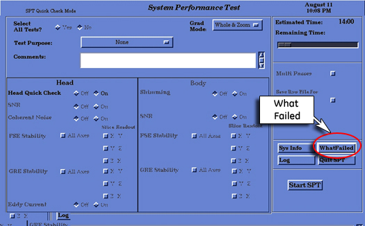
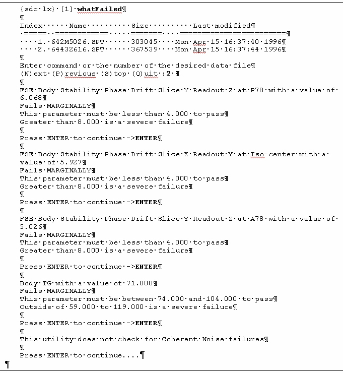

- 00000018WIA302F7E20GYZ
- id_131061533.0
- Aug 29, 2019 1:37:28 AM
Troubleshooting SPT Problems
System Shutdown
If there is a stop scan condition (such as a hardware error) during a run of SPT, then it is recommended that the system be rebooted. This condition may be caused by the test software being out of sync with the scan software. The only way to clear this condition is to reboot. Follow these instructions:
-
Right-click on the desktop wallpaper area and select Service Tools from the root menu, then select System Shutdown. Click Yes to confirm.
-
When the message “Okay to power off the system now. Press any key to restart” appears, double-click on the Signa icon (or type Signa in the Login name field), then click the Log In button. Enter the password adw2.0 and click Log In again. Allow initialization to fully complete before any user interaction.
Note:It is possible that the customer changed the default password. If you cannot log in, contact the customer for the correct password.
-
Continue with the SPT test.
Utilities for SPT
There are five utilities that are useful when you use SPT. To view a short description of them, refer to the following:
-
Sptreset - If a problem occurs when exiting SPT in an unusual manner, and the system seems to be in an unusual configuration, type the following in a C-Shell: cd /usr/g/service/cclass/spt
sptreset Enter. This puts all the files and configuration values back in their original condition.
-
"T" File Cleanup - "T" File Cleanup is a file space management tool. It cleans up the /usr/g/service/data directory. See the procedure for "T" File Cleanup for more information on how to use it. (This can be found in Software – System level software utilities in the documentation)
-
"whatFailed" - This utility scans through user-selected SPT result files and reports what portion of the test failed, and the actual result and test spec for that test.

To run the "whatFailed" utility, you can either:
-
Open a C-shell from the Service Desktop, then type: whatFailed (Case Sensitive) and press Enter, or
-
Select the whatFailed button from the System Performance Test GUI. See Figure 1.
A menu of all the SPT files for that system will pop up. Select one of the tests displayed (or quit). The utility will then read the file comparing each test (except for Coherent Noise) against its limits. If there are no failing values in the file, you’ll see the following message:
"This utility does not check for Coherent Noise failures."
Press Enter to continue. For each failure it finds, it will print out each failure one at a time. Press Enter to move through each failure listed. See illustration below for a whatFailed example.
